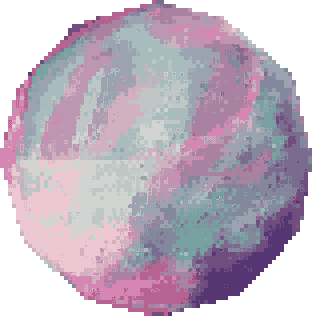
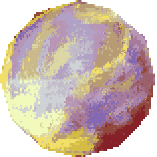
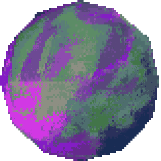
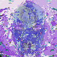
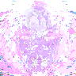
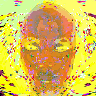

I’m basically a guy overflowing with dreams, visions, and soundscapes that won’t leave me alone until I make something out of them. My narcolepsy gives me these insanely vivid, continuous dreams, and a lot of my music and stories come straight from that world — the Ultra Kingdom Universe. I’m self‑taught in everything, still figuring out how to “properly” write music, but I’d rather chase the ideas than get stuck on the rules. I’m clearing out old tracks, tightening up my creative direction, and trying to build a workflow that actually makes sense. I want to score my own games and films, make the worlds in my head feel real, and share the process through my work, merch, and commissions. I’m also deep into making games — shooters, walking sims, point‑and‑clicks — using Godot, Pico‑8, and JavaScript_games as my main playgrounds.
I’m all about using whatever tools I have — old hardware, open‑source software, weird operating systems — anything that lets me create without buying into the “you need expensive gear” myth. My site is basically an interactive sketchbook mixed with simple pages that explain what I’m working on. I’m trying to document my process, share what I’ve learned, and hopefully inspire people to chase their own creative freedom without feeling pressured to upgrade everything they own. At the end of the day, I’m building a universe from scratch and figuring it out as I go, and I’m inviting people to watch it grow.